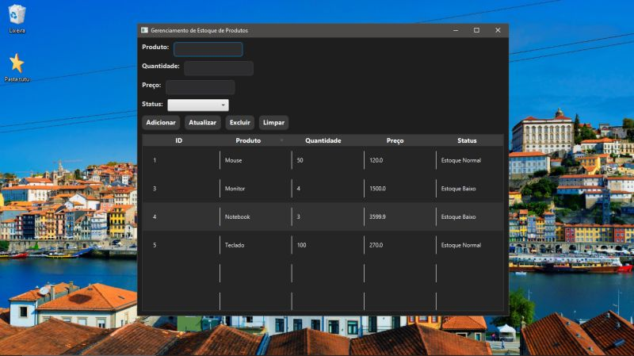
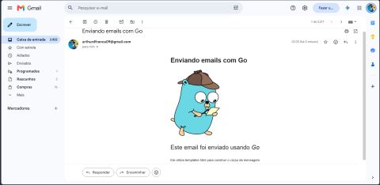
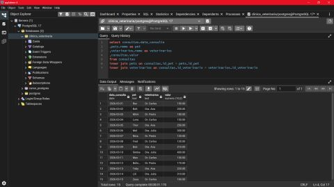

Sistema de controle de estoque
Sistema feito utilizando Java, SpringBoot e MySql com métodos CRUD.
Ver no GitHubDesenvolvedor em formação, apaixonado por tecnologia, desenvolvimento de software e soluções eficientes.
Entre em contatoSou um desenvolvedor em formação, com interesse em construir uma carreira na área de tecnologia, especialmente no setor bancário. Busco uma oportunidade como Desenvolvedor Júnior, trabalhando com Java, Go e bancos de dados relacionais.
Tenho interesse no desenvolvimento de APIs REST, integração entre sistemas, criação de soluções eficientes e organização de dados. Estou sempre buscando aprimorar meus conhecimentos e desenvolver projetos que contribuam para minha evolução profissional.

Sistema feito utilizando Java, SpringBoot e MySql com métodos CRUD.
Ver no GitHub
Usando o Go e a biblioteca gopkg, criei um sistema de envio automático de email's personalizados com html.
Ver no GitHub
Utilizando o PostgreSQL, criei um sistema fictício de uma clínica veterinária para praticar conceitos sql.
Ver no GitHubRepositório com atividades, exercícios e projetos desenvolvidos durante minha formação no curso técnico da escola Major Telmo.